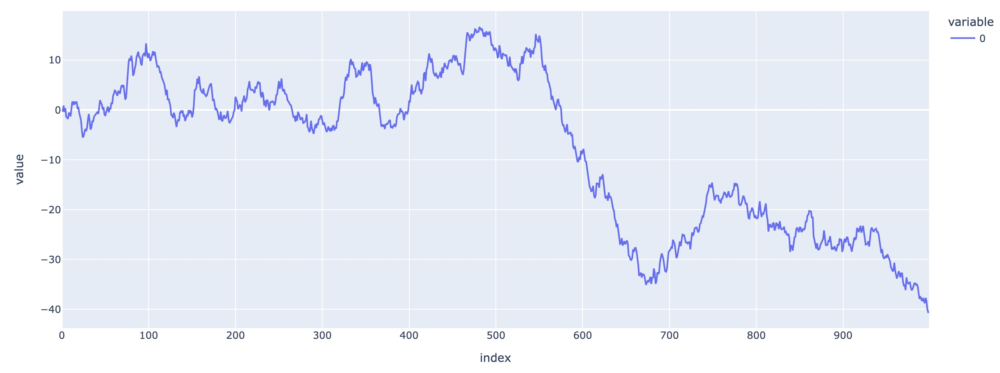

Time Series Forecasting in Python: Chapter 02
Disclaimer
The contents here are the notes taken by me while I was reading the book Time Series Forecasting in Python by Marco Peixeiro. The book can be found online at this link. The book is also available at Oreilly online library if your organization has a subscription to Oreilly.
The write up here is merely for notes so that I can revisit later on demand. The rights to the contents of the books remain with the author.
My Notes from Chapter-03: Random Walk
-
To use random walk, the series must be Stationary Model.
- For a series that is not stationary, we can make is stationary using Differencing, which is a transformation.
- After applying Differencing, we can use auto-correlation plot to determine if the resulting series can be applied with random walk.
- Under the concept of random walk, any point in time t+1 is the value in time t plus a constant value C and a time dependent random number E which is standard normal distributed with a mean of 0 and variance of 1.
- Thus, y(t+1) = y(t) + C + E(t) is the equation in Random Walk for predicting a y-value in time t+1 on the basis of value in time t.
-
Let us create our own random walk
- For easiness, let us consider C=0, and the initial value of y at t=0 is y(t=0) = 0.
- Thus, at any time time t = T, the valye of y(t=T) will be sum(E(t) for t = 0 to T), where E is a random variable that follows standard normal distribution.
- Thus, y(t) for this simplified case is basically cumulative sum of E(t).
-
Coding Random Walk in Python
-
import numpy as np # let us set a seed value np.random.seed(21) # let us set the first value y(0) to be 0 for simplicity y0 = 0 # let us create 1000 values for our series E = np.random.standard_normal(1000) # let us compute other y-values using cumsum function # .. for cumulative sum computation y = np.cumsum(E) import plotly.express as px # import plotly.io as pio # pio.renderers.default = 'iframe' px.line(y)

-
-
Testing If Some Series Satisfies Random Walk:
- The first difference must be stationary and uncorrelated.
- Stationary: Means the statistical properties should remain the same. Meaning, mean, median, std etc of the series should always remain the same with time.
- If a series is not stationary, we will find ways to make it stationary, thereby stabilizong mean and variance if the series.
- One of the simplest transformation that we can apply is differencing, where yd(t) = y(t) - y(t-1).
- Differencing helps to remove the seasonality and trend from the series, and thus stabilize mean.
-
Sometimes differencing can be applied multiple times, thus called, second order differencing, third order differencing and so on
In python, there is a function np.diff(series, n) where n=1 means first order differencing. - Log Function: Logarithms can be applied to stabilize variance.
-
A series is Stationary or not can be confirmed by using Dickey Fuller Test, which tests if the root of a series is between -1 and +1 (exclusive). If it is, then the series is stationary.
There is a function in from statsmodels.tsa.stattools import adfuller, where you can pass your series to perform the Dickey Fuller test.
The function returns a tuple of two values. If the first element of the tuple is large negative number, we can confirm the series to be stationary with second element confidence. (The second element gives the confidence or p-value). - Uncorrelated can be tested using AutoCorrelation Function. There is function in python in from statsmodels.graphics.tsaplots import plot_acf that can be used to plot auto-correlation.
- In order for auto correlatiion to be insignificant, all the plots obtained for different lags should be close to 0.
- We use lag value of 20 (i.e. upto 20) in general usages.
-
Forecasting Random Walk:
- A random walk can only be forecasted using naiive methods that we learned in Ch02.
- Drift Method:
- Drift method is similar to forecasting using the last value, or is a modification of that technique.
- Here, we compute the overall slope, using the first data point of the series and the last data point.
- Once the slope is identified, this captures the overall trend of data. We can predict the next value using this slope and initial value or the value at t=T-1.
- Simply Using the Last Value
- Based on this book chapter, simply using the last value gives a better prediction and overall MSE.